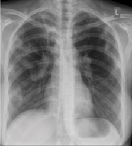

Ficha del catálogo
Tuberculosis pulmonar
- Sistema
- Respiratorio
- Modalidad
- RX
- Región
- Tórax
- Dificultad
- Avanzado
Infección por Mycobacterium tuberculosis con manifestaciones radiológicas que difieren según se trate de una primoinfección o de una reactivación. Sigue siendo un problema de salud pública mundial y la radiografía de tórax es clave en su detección.
Técnica
Radiografía posteroanterior de tórax; la tomografía se reserva para casos dudosos, para valorar la extensión y para detectar cavitaciones o diseminación no visibles en la radiografía simple.
Qué observar
- Tuberculosis posprimaria (reactivación): Opacidades en los segmentos apicales y posteriores de los lóbulos superiores y en el segmento superior de los inferiores, que son las zonas mejor oxigenadas
- Cavitaciones de pared gruesa e irregular dentro de las zonas de consolidación
- Nódulos y opacidades reticulonodulares por diseminación broncógena
- Tuberculosis primaria: Consolidación en cualquier lóbulo acompañada de adenopatías hiliares o mediastínicas, hallazgo especialmente típico en niños
- Patrón miliar: Micronódulos de 1-3 mm distribuidos de forma uniforme por ambos campos
- Secuelas: Fibrosis, retracción, calcificaciones y bronquiectasias
Hallazgos
Opacidades parcheadas de distribución apical con nódulos asociados, patrón sugestivo de tuberculosis pulmonar.
Perlas
La localización orienta mucho: La reactivación prefiere los vértices, mientras que la primoinfección puede estar en cualquier sitio pero casi siempre asocia adenopatías. Ante una opacidad apical con cavitación en un paciente con tos crónica, la tuberculosis debe encabezar la lista de sospechas.
Diagnóstico diferencial
- Neumonía bacteriana
- Aparece con consolidación de instauración aguda, sin predilección apical ni cavitación de pared gruesa, y responde con rapidez al tratamiento antibiótico.
- Carcinoma broncogénico cavitado
- La cavidad tiene pared gruesa e irregular con nódulo mural, se asocia a masa y adenopatías y no muestra la distribución apical típica ni la diseminación broncógena.
- Absceso pulmonar
- Es una cavidad única con nivel hidroaéreo y pared gruesa, localizada en segmentos declives, en un paciente con factores de aspiración.
- Infección micobacteriana no tuberculosa
- Suele presentarse con bronquiectasias y nódulos pequeños en língula y lóbulo medio, con menor tendencia a la cavitación apical.
- Sarcoidosis
- Predominan adenopatías hiliares bilaterales y simétricas con nódulos de distribución perilinfática y afectación de campos medios y superiores, sin cavitación.
- Metástasis miliares o neumoconiosis
- El patrón micronodular puede parecerse al miliar, pero se distingue por el contexto clínico, la distribución y la presencia de otros hallazgos como masas o placas pleurales.
Simuladores
- Las secuelas fibrosas de una tuberculosis antigua, con retracción, calcificaciones y bronquiectasias, se confunden con enfermedad activa (la comparación con estudios previos es lo que resuelve la duda).
- Una bulla apical o un enfisema paraseptal pueden simular una cavitación, pero su pared es finísima y no hay consolidación circundante.
- La superposición de la clavícula, la primera costilla y el manubrio crea opacidades y radiolucideces falsas en los vértices, precisamente donde asienta la reactivación.
- Los granulomas calcificados residuales son densos, de bordes netos y estables en el tiempo, y no deben informarse como lesiones activas.
Por modalidad
- RX
- Herramienta básica de detección y de seguimiento, con buen rendimiento para la distribución apical, las cavidades grandes y el patrón miliar.
- TC
- Mucho más sensible: Identifica nódulos centrolobulillares en brote de árbol, que indican diseminación broncógena activa, cavidades pequeñas, adenopatías necróticas y bronquiectasias.
- US
- Se emplea para valorar el derrame pleural tuberculoso, orientar su punción y estudiar adenopatías periféricas.
- RM
- Reservada para la afectación extratorácica, en especial la espinal y la del sistema nervioso central.
Protocolo
Radiografía posteroanterior de tórax en bipedestación e inspiración profunda, con proyección lateral cuando se necesita localizar lesiones. En la tomografía se adquieren cortes finos de alta resolución sin contraste para el estudio del parénquima, añadiendo contraste intravenoso cuando interesa valorar adenopatías, que en la tuberculosis muestran de forma característica un centro hipodenso con realce periférico. Debe tenerse presente que el estudio se realiza con las precauciones de aislamiento respiratorio necesarias, y que la imagen nunca sustituye la confirmación microbiológica.
Clasificación
La tuberculosis pulmonar se describe según su forma en primaria, con consolidación y adenopatías, sobre todo en niños; posprimaria o de reactivación, con predilección por los segmentos apicales y posteriores de los lóbulos superiores y el segmento superior de los inferiores, con cavitación; y diseminada o miliar, con micronódulos uniformes por ambos campos. Se distingue además entre enfermedad activa, sugerida por consolidación, cavitación y nódulos en brote de árbol, e inactiva o residual, con fibrosis, retracción y calcificaciones estables. La estabilidad radiológica comparada en el tiempo es uno de los criterios más útiles para considerarla inactiva.
Errores frecuentes
- Informar como activa una lesión que en realidad es secuelar por no comparar con estudios previos.
- Descartar tuberculosis por una radiografía sin cavitación, ya que en pacientes inmunodeprimidos la presentación es atípica y con frecuencia sin cavidades.
- Pasar por alto un patrón miliar, cuyos micronódulos son muy finos y se aprecian mejor con una lectura atenta o con tomografía.
- No revisar los vértices con detenimiento, que es la localización preferente y la zona donde más lesiones se escapan por superposición ósea.

tuberculosis cavitacion apical infeccion miliar torax adenopatias